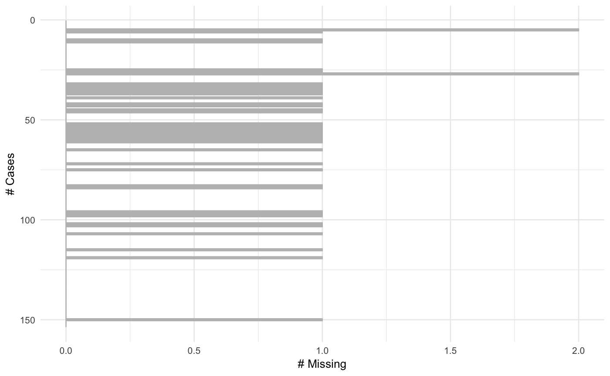
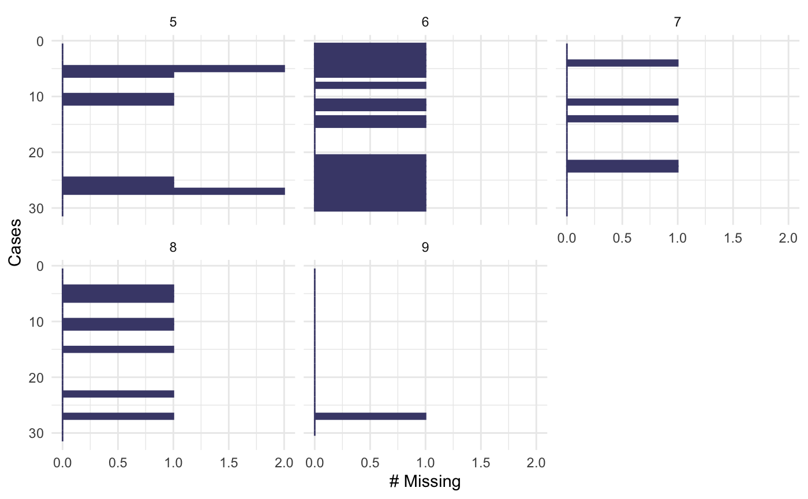
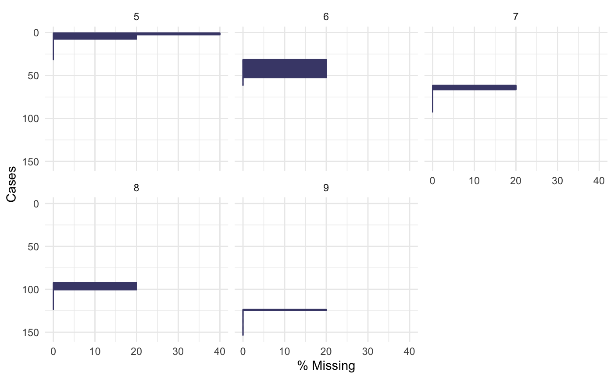

This is a visual analogue to miss_case_summary. It draws a ggplot of the
number of missings in each case (row). A default minimal theme is used, which
can be customised as normal for ggplot.
gg_miss_case(x, facet, order_cases = TRUE, show_pct = FALSE)
Arguments
| x | data.frame |
|---|---|
| facet | (optional) a single bare variable name, if you want to create a faceted plot. |
| order_cases | logical Order the rows by missingness (default is FALSE - no order). |
| show_pct | logical Show the percentage of cases |
Value
a ggplot object depicting the number of missings in a given case.
See also
geom_miss_point() gg_miss_case_cumsum gg_miss_fct() gg_miss_span() gg_miss_var() gg_miss_var_cumsum() gg_miss_which()
Examples
gg_miss_case(airquality)gg_miss_case(airquality, show_pct = TRUE)gg_miss_case(airquality, order_cases = FALSE)gg_miss_case(airquality, facet = Month)gg_miss_case(airquality, facet = Month, order_cases = FALSE)gg_miss_case(airquality, facet = Month, show_pct = TRUE)